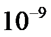
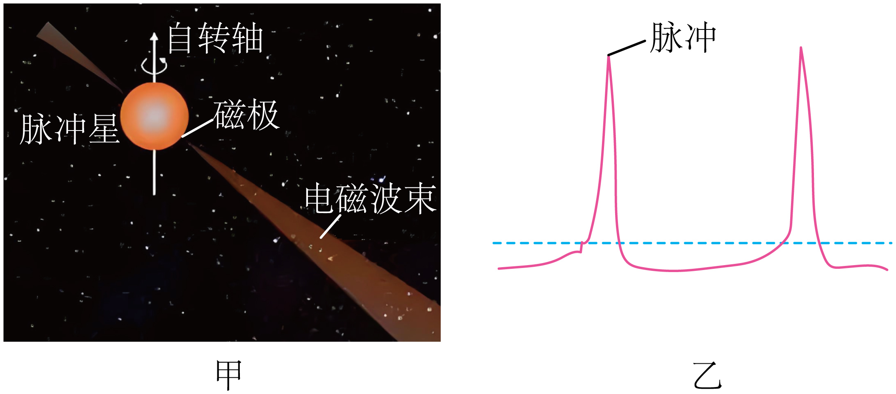

2024年北京市中考物理试题 · 科普阅读 第24题
24. 请阅读《宇宙灯塔——脉冲星》并回答问题。
宇宙灯塔——脉冲星
截至2024年5月，有“中国天眼”之称的500m口径球面射电望远镜（FAST）发现的新脉冲星数量突破900颗，这些发现，极大拓展了人类观察宇宙视野的极限。
“中国天眼”紧盯的脉冲星是什么？脉冲星是一类高速自转的天体，具有极强的磁场，它高速自转时就在两磁极处形成了方向性很强的锥形电磁波束（如图甲所示）。由于两个电磁波束会随着脉冲星的高速自转而一起转动，它们就会像灯塔发出的两束光一样扫过宇宙空间。电磁波束每扫过地球上的射电望远镜一次，射电望远镜就会收到一个脉冲信号（如图乙所示），脉冲星便以此而得名。
脉冲星具有极其稳定的自转周期（自转一圈所用的时间），部分脉冲星的自转周期约3亿年仅变化0.1ms，因此可将脉冲星作为计时基准。
脉冲星还是宇宙中的“探针”，可应用于探测引力波。宇宙中的超大质量天体加速运动时，会产生引力波。引力波信号极其微弱，特别是纳赫兹（

Hz）引力波，难以直接观测。但是，引力波会使我们收到的脉冲星的脉冲信号发生变化。我国科学家通过综合分析多个脉冲星脉冲信号的变化，于2023年6月找到了纳赫兹引力波存在的关键证据。越来越多被发现的脉冲星，犹如宇宙中不断被点亮的灯塔，引领我们揭开更多暗藏在宇宙中的秘密。

请根据上述材料，回答下列问题：
（1）电磁波束每扫过射电望远镜一次，射电望远镜就会收到一个________，脉冲星便以此而得名；
（2）脉冲星能够作为计时基准是因为它具有________；
（3）科学家找到纳赫兹引力波存在的关键证据的研究方法在初中物理的学习过程中也用到过，请类比研究条形磁体周围磁场分布的方法，补全表格中①②的内容_________；
研究对象 | 条形磁体的磁场 | 纳赫兹引力波 |
观测“设备” | 人眼 | 中国天眼 |
探测工具 | 铁屑 | ① |
可观测证据 | 铁屑有规则地排列 | ② |
推理得到的结论 | 条形磁体周圆的磁场有规律分布 | 纳赫兹引力波存在 |